This is my take on the ‘Data is’ vs ‘Data are’ debate, and an excuse to try out different graphs.
The data set used for the following examples is from the open D1NAMO dataset: A multi-modal dataset for research on non-invasive type 1 diabetes management by Fabien Dubosson et al. Data from the study is indexed in this GitHub repo. Dubosson’s study followed 29 individuals, 9 of which with type-1 diabetes, for 4 days. Continuous glucose monitoring was done with IPro2 Professional CGM Sensor for the 9 individuals with type-1 diabetes. All 29 individuals wore a Zephyr BioHarness 3 which tracked ECG rhythm from lead I (measuring electrical vectors across the heart), they also wore a pressure sensor to measure respiration rate. During the study participants submitted photos of their meals to dietitians who annotated the foods present and determined the health quality of the meals.
library(tidyverse); library(ggplot2); library(magrittr);
library(stringi); library(hms)colorPalette <- c('#d9a5b3', '#c6d7eb', '#1868ae', '#9ec1b6', '#9d0f40', '#e0dab7')
The visdat package is a handy way to visualize all data in a table as a bar graph of sorts. Here is the whole insulin_df data table visualized.
library(visdat)
visdat::vis_dat(insulin_df)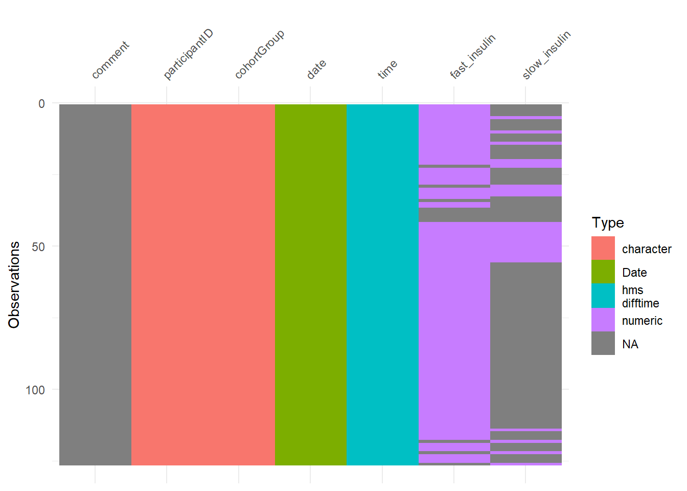
Now, here is a single datum from insulin_df…
visdat::vis_dat(insulin_df[14,3])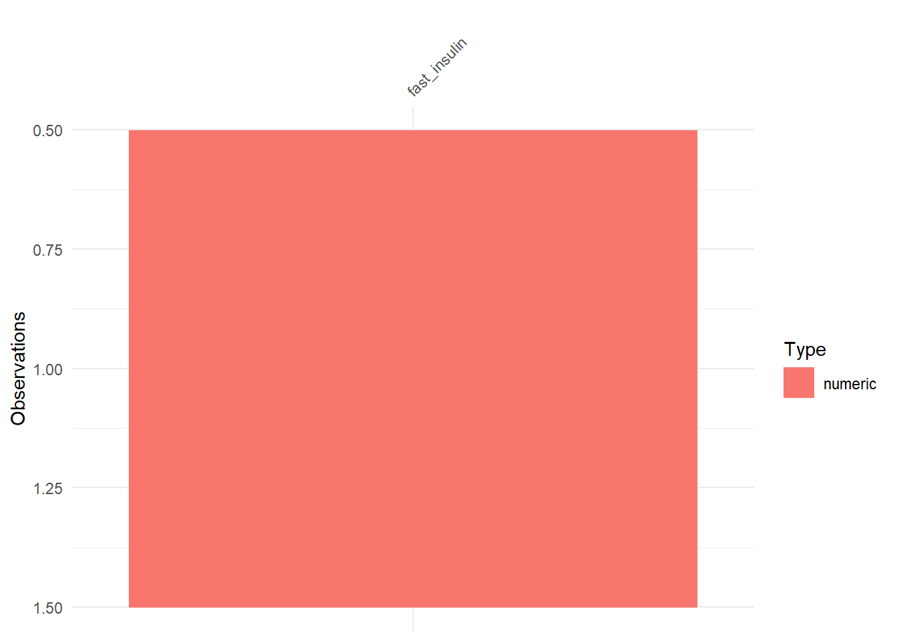
This single, numeric ‘datum’ on its own has no useful qualities. It may be paired with the time of measurement (22:35:00) or the participant ID (001) or even compared to some other similar datum from a different observation:
insulin_df[c(14,24),3]## # A tibble: 2 x 1
## fast_insulin
## <dbl>
## 1 2
## 2 4
To what extent is this datum unit useful on its own? How often is the term ‘datum’ used in the wild? Is ‘datum’ important enough to take up space that the word ‘data’ could fulfill?
This is a word cloud of most frequent words appearing in participants’ meal descriptions. They are grouped by cohort: diabetic and non-diabetic.
library(wordcloud2)
library(tidytext)
# https://cran.r-project.org/web/packages/wordcloud2/vignettes/wordcloud.html
data("stop_words")
topFoods <- function(df, color1, color2){
wordFreq <- unnest_tokens(tbl = df, output = word, input = description) %>%
anti_join(y = stop_words, by = "word") %>%
filter(stri_detect(word, regex = "^(\\D)")) %>%
count(word, sort = TRUE, name = "freq")
wordcloud2(wordFreq, color = c(rep(color1, 10),rep(color2, nrow(wordFreq)-10)))
}Diabetic Cohort
topFoods(food_diabetic_df, colorPalette[3], colorPalette[6])Non-Diabetic Cohort
topFoods(food_nondiabetic_df, colorPalette[5], colorPalette[4])
Speaking of words, one may argue to use data/datum over data/data by citing Latin grammar rules for second-declension neuter nouns. Using data/datum correctly in the nominative or accusative case would make Horace proud (or vocative, assuming you talk to your data). But what of the genative or the ablative cases? Is this rule the same for all of my datī or just one of my datōrum? Does one also gather information from datō or a single datīs?
Is this an exaggeration of the Latin argument? I prefer to leave no hair unsplit, if it is my vocation to split them.
The Latin argument was a fun way to reminisce back to my high school Latin classes, however I think the most damning argument lies in the English language. Specifically ‘Academic English’, the Dr. Frankenstein of ghastly words. Consider eigenvalue, neurotransmitter, Sociology, octopus and many more. As a word, data has been claimed by English. As English speakers, it is up to us to use data/datum however we please until a consensus is reached.
But what do individual words really mean? Out of the context of a sentence, do they tell use anything? Term Frequency (TF) and Inverse Document Frequency (IDF) are simple statistics that help illuminate which words are most specific to certain documents. TF is straight forward, the total number of times a term appears divided by the number of unique terms. IDF is the total number of documents divided by the number of documents in which each term appears, usually this proportion is log scaled. For example, if we are looking at 5 essays and we want to find the IDF of “potato”, and we know that the term “potato” appears in 3 of the 5 essays:
IDF(potato) = log( numberOfDocs / numberOfDocsWithPotato ) = log( 5 / 3 )
Once each terms’ TF and IDF are calculated, they are multiplied together to make a score of how specific each term is, compared to the rest of the terms. A term like “potato” is rather specific, so it should have a higher TF-IDF than the term “and”.
Rather than grouping IDF by ‘document’ I grouped the words in participants’ meal description by the quality of the meal assigned by a dietitian. Here is the table generated by tidytext::bind_tf_idf:
tfidf <- function(df, group){
unnest_tokens(df, word, description) %>%
anti_join(stop_words, by = "word") %>%
filter(stri_detect(word, regex = "^(\\D)")) %>%
count(word, across({{ group }}), name = "n") %>%
bind_tf_idf(word, {{ group }}, n)
}
tfidf(food_diabetic_df, "quality")## # A tibble: 258 x 6
## word quality n tf idf tf_idf
## <chr> <ord> <int> <dbl> <dbl> <dbl>
## 1 alfalfa Good quality 1 0.00549 1.10 0.00604
## 2 apple Good quality 1 0.00549 0 0
## 3 apple Medium quality 2 0.0137 0 0
## 4 apple Low quality 1 0.00699 0 0
## 5 asiago Good quality 3 0.0165 0.405 0.00668
## 6 asiago Medium quality 2 0.0137 0.405 0.00555
## 7 au Good quality 1 0.00549 1.10 0.00604
## 8 babybel Medium quality 1 0.00685 1.10 0.00752
## 9 baguette Low quality 1 0.00699 1.10 0.00768
## 10 baked Good quality 2 0.0110 1.10 0.0121
## # ... with 248 more rowsThe four histograms below show relationships between TF, IDF, and TF-IDF. Each histogram is colored by the upper and lower 50% quantiles of TF (green, blue) and IDF (pink, yellow).
# hist comparison of n, tf, idf, tf-idf
tfidf_quality <- tfidf(food_diabetic_df, "quality")
tfidf_quality %<>% mutate(
tfQuantile = ifelse(tf > quantile(tf,probs = 0.5,na.rm = TRUE,names = FALSE),
"highQuant","lowQuant"),
idfQuantile = ifelse(idf > quantile(idf,probs = 0.5,na.rm = TRUE,names = FALSE),
"highQuant","lowQuant")
)
tfidf_hist <- function(df, x, fill, binwidth, color1, color2){
df %>% ggplot( aes(x = {{ x }}, fill = {{ fill }}) ) +
geom_histogram(binwidth = binwidth, color = 'white') +
scale_fill_manual(values = c(color1, color2))
}This histogram shows term frequency overylayed by the IDF upper and lower quantiles. The majority of TF is around 0.00 because most terms appear infrequently. IDF upper and lower quantiles are spread through the distribution of TF.
tfidf_hist(tfidf_quality, `tf`, `idfQuantile`, 0.005, colorPalette[1], colorPalette[6])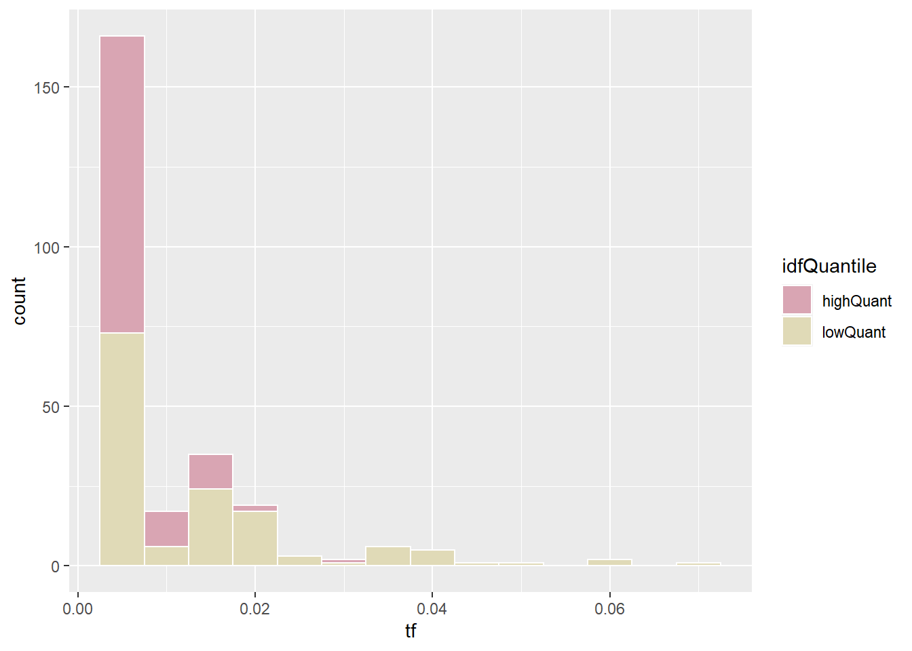
This histogram shows IDF overlayed by TF upper and lower quantiles. There are three IDF spikes since each term can only appear in one, two, or three quality groups.
log(3/3) = 0
log(3/2) = 0.176
log(3/1) = 0.477
Most terms appear in only one document, with a majority of these terms in the lower TF quantile.
tfidf_hist(tfidf_quality, `idf`, `tfQuantile`, 0.08, colorPalette[4], colorPalette[2])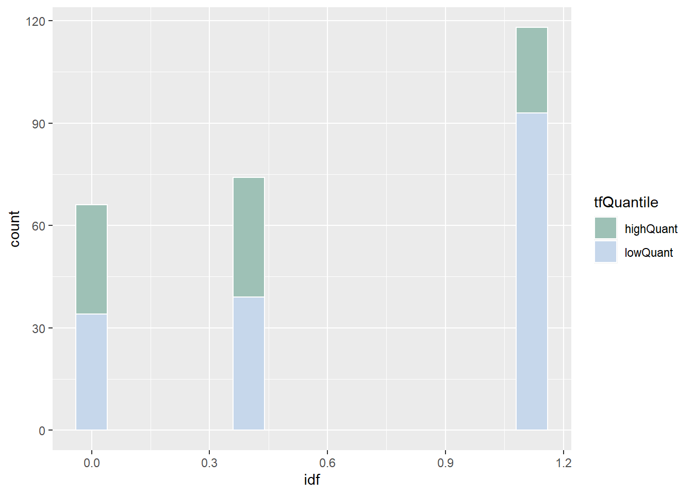
This shows TF-IDF overlaid by TF upper and lower quantiles. Few terms have TF-IDF above 0.02 and none of the lower quantile TF terms have TF-IDF scores above 0.01
tfidf_hist(tfidf_quality, `tf_idf`, `tfQuantile`, 0.002, colorPalette[4], colorPalette[2])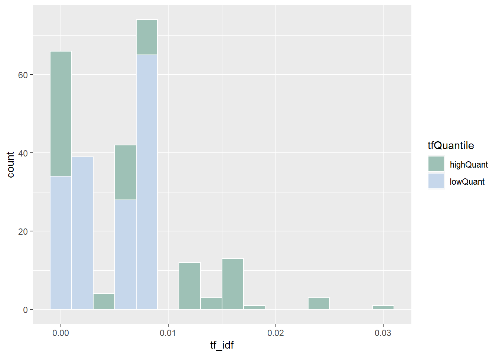
This shows TF-IDF overlayed by IDF upper and lower quantiles. Upper quantile IDF terms are shifted above an TF-IDF score of 0.005. There are still some lower quantile IDF terms with the highest TF-IDF scores above 0.2, showing that IDF alone would lose some terms that TF-IDF selects.
tfidf_hist(tfidf_quality, `tf_idf`, `idfQuantile`, 0.002, colorPalette[1], colorPalette[6])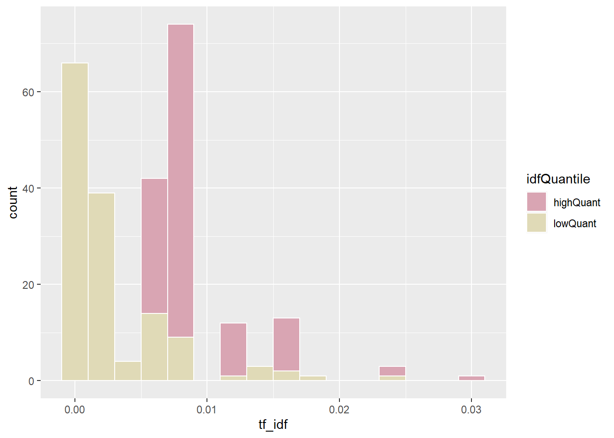
Here is a treemap showing the top TF-IDF terms that are explored above. They are grouped by diabetic and non-diabetic cohorts.
library(treemap)
# tree map or mosaic map
mosaic <- function(df, group, plotTitle){
df %>% filter(n > 3, tf_idf > 0) %>%
arrange(group) %>%
treemap::treemap(index = c(group, "word"),vSize = "tf_idf",vColor = group,
type = "categorical",title = plotTitle,fontsize.labels = c(0, 10),
fontfamily.labels = "serif",
palette = c(colorPalette[4],colorPalette[2],colorPalette[1]),
align.labels = c("center", "center"),border.lwds = 0
)
}
food_diabetic_tfidf<- tfidf(food_diabetic_df, "quality")
food_nondiabetic_tfidf<- tfidf(food_nondiabetic_df, "quality")Diabetic Cohort
mosaic(food_diabetic_tfidf, "quality", "TF-IDF")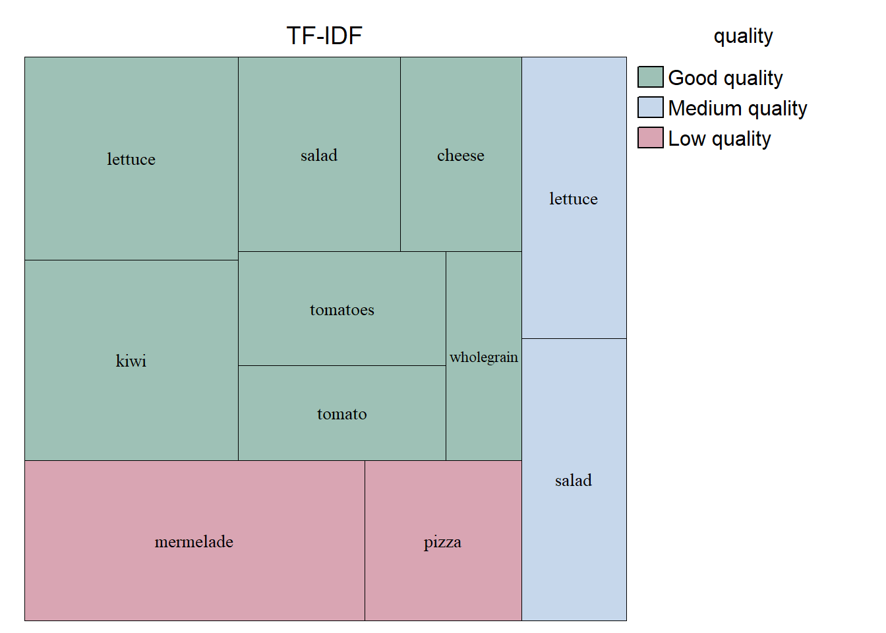
Non Diabetic Cohort
mosaic(food_nondiabetic_tfidf, "quality", "TF-IDF")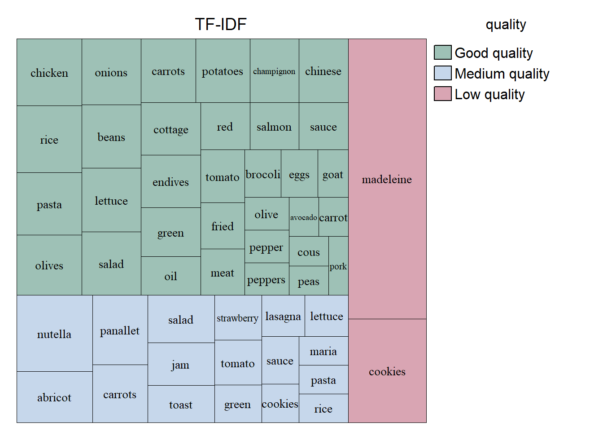
There were only 9 diabetic participants and 20 non-diabetic participants. Most of the grouped terms make sense: cookies - low quality, strawberry - medium quality, chapeignon - good quality? It might be important to note that this study took place in the Swiss town Vevey.
This bar graph shows the percent of meals that are good, medium, or low quality grouped by cohort.
# amount of meals for each quality, per cohort
foodQualityMatrix <- matrix(c(count(food_nondiabetic_df, quality)$n,
count(food_diabetic_df, quality)$n), ncol = 2)
colnames(foodQualityMatrix) <- c("nondiabetic", "diabetic")
# arrange good, med, low
foodQualityMatrix <- rbind(foodQualityMatrix[1,],foodQualityMatrix[3,],foodQualityMatrix[2,])
rownames(foodQualityMatrix) <- c("Good quality", "Medium quality", "Low quality")
par(mar=c(5,6,2,1))
apply(foodQualityMatrix, 2, function(x){x*100/sum(x)}) %>%
barplot(horiz = TRUE,col = c(colorPalette[4],colorPalette[2],colorPalette[1]),
legend.text = TRUE,args.legend = list(x = "topleft", inset=c(0.10,-0.18),
ncol = 4, bty='n', xpd = TRUE),
las = 1,border = 'white',xlab = 'Percent of Meals by Quality'
)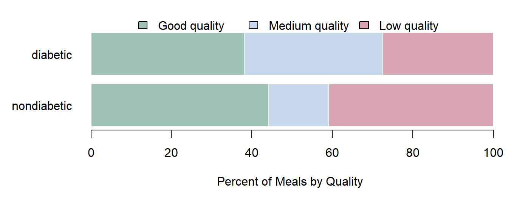
Returning to data/datum/datīs.
When I think of data, I think of flow, volume, and distribution. Much of the data that I am interested in is big, large, or massive. When data is the size of a lake, I am not that interested in one particular datum molecule. The sensor data from this study has 212627708 mols of data, or data points, or datum. Like water, I think that the unit of measurement for data is arbitrary. One unit of water can be one molecule, or one cc, or one gallon. In the same way I think that one unit of data is an arbitrary measurement. It could be one triplet, one observation (row), or one set.
Included in the sensor data are 5595466 heart rate (HR) measurements, and the same amount of respiration rate (BR) measurements. The continuous glucose monitor (CGM) data is 8691 rows long. Only the diabetic cohort had CGM monitors.
This shows the distributions of CGM Measurements for all 9 diabetic participants:
glucose_df %>% filter(type == "cgm") %>% ggplot(aes(x=participantID, y=glucose)) +
geom_violin(trim = FALSE, fill=colorPalette[2], color=colorPalette[3]) +
geom_boxplot(width=0.06, fill=colorPalette[1]) +
labs(x = "participantID", y = "Blood Glucose [mmol/L]") +
ggtitle("Participant Distributions of CGM Measurements") +
geom_hline(yintercept=11.1, linetype='dashed', color=colorPalette[5], size=0.6) +
annotate("text", x="009", y=11.1, label="High", color = colorPalette[5], vjust=-0.5) +
theme_minimal() +
theme(plot.title = element_text(hjust = 0.5))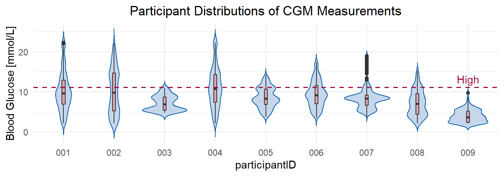
Distributions are great, lets try some more. The next three figures show the distributions of CGM, heart rate, and breathing rate on 2014-10-02 for participant 006.
library(ggridges)
# https://cran.r-project.org/web/packages/ggridges/vignettes/introduction.html
# CGM
glucose_df %>%
filter(type == "cgm", participantID == "006", date == unique(date)[2]) %>%
mutate(time=stri_extract(as.character(time),regex="^(\\d{2})")) %>%
ggplot(aes(x=glucose, y=time, fill=stat(x))) +
geom_density_ridges_gradient(scale=1.3, rel_min_height=0.01) +
scale_fill_continuous(name="Blood Glucose", low=colorPalette[1], high=colorPalette[5]) +
labs(x="Blood Glucose [mmol/L]", y="Hour") +
ggtitle('Participant 006\nHourly CGM Distribution\n2014-10-02') +
geom_vline(xintercept=11.1, linetype='dashed', color=colorPalette[5], size=0.6) +
annotate("text", x=11.1, y="06", label="High", color=colorPalette[5], hjust=-0.4) +
theme_minimal()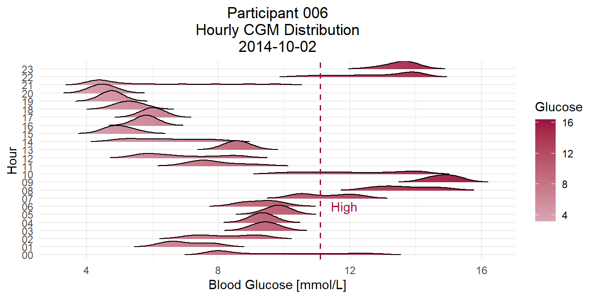
# Heart Rate
sensor_df %>%
select(HR, BR, Activity, participantID, cohortGroup, date, time) %>%
mutate(time = stri_extract(as.character(time), regex = "^(\\d{2})")) %>%
filter(participantID == "006", cohortGroup == "diabetes_subset",
date == unique(date)[2], HR > 0, BR > 0) %>%
ggplot(aes(x=HR, y=time, fill=stat(x))) +
geom_density_ridges_gradient(scale=1.3, rel_min_height=0.01) +
scale_fill_continuous(name="Heart Rate", low=colorPalette[2], high=colorPalette[4]) +
labs(x="Heart Rate [bpm]", y="Hour") +
ggtitle("Participant 006\nHourly Heart Rate Distribution\n2014-10-02") +
theme_minimal()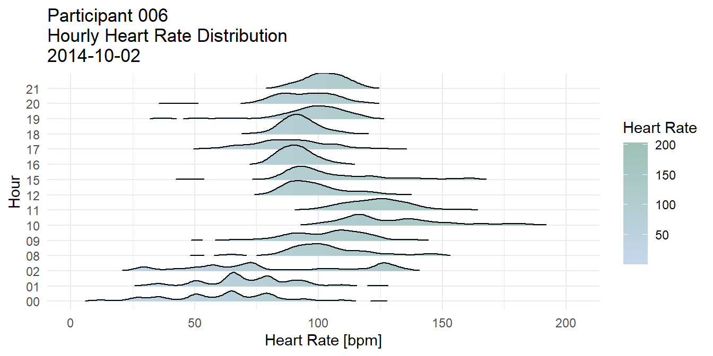
# Breathing Rate
sensor_df %>%
select(HR, BR, Activity, participantID, cohortGroup, date, time) %>%
mutate(time = stri_extract(as.character(time), regex = "^(\\d{2})")) %>%
filter(participantID == "006", cohortGroup == "diabetes_subset",
date == unique(date)[2], HR > 0, BR > 0) %>%
ggplot(aes(x=BR, y=time, fill=stat(x))) +
geom_density_ridges_gradient(scale=1.3, rel_min_height=0.01) +
scale_fill_continuous(name="Breathing Rate", low=colorPalette[6], high=colorPalette[3]) +
labs(x="Breathing Rate [breaths/min]", y="Hour") +
ggtitle("Participant 006\nHourly Breathing Rate Distribution\n2014-10-02") +
theme_minimal()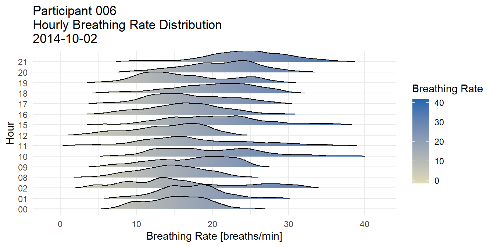
On the topic of time series, here is an uncommon type of graph: the radar graph. Radar graphs, aka spider graphs, are used in some areas of Psychology and Medicine with categorical data. Some individuals like them since they can display multiple correlated categories in a small space. I personally think that there are better options to display related categorical data, however radar graphs could become useful with continuous cyclical or seasonal data. Here is an example of the CGM of the same participant (006) on 2014-10-02.
library(fmsb)
# https://cran.r-project.org/web/packages/fmsb/fmsb.pdf
# radar cgm for one individual
glucose_df_wide <-
filter(glucose_df, type == "cgm", participantID == "006", date == unique(date)[2]) %>%
mutate(time = stri_extract(as.character(time),regex="^(\\d{2})")) %>%
group_by(time) %>%
summarise(glucose = mean(glucose)) %>%
pivot_wider(names_from = time, values_from = glucose)
rbind(
rep(16,ncol(glucose_df_wide)),
rep(4,ncol(glucose_df_wide)),
glucose_df_wide[,order(ncol(glucose_df_wide):1)]
) %>% radarchart(axistype=1, seg=3, plwd=1, centerzero=FALSE, cglcol=colorPalette[1], cglty=1,
axislabcol=colorPalette[5], caxislabels=seq(4,16,4), vlcex=0.8,
title = "Participant 006\nHourly Mean Glucose\n2014-10-02"
)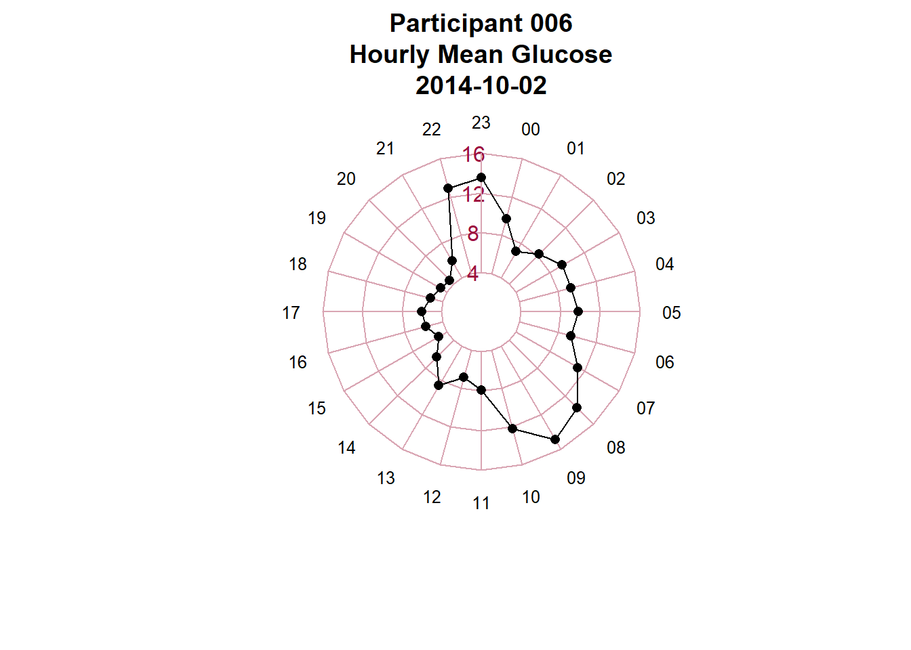
Few R packages exist for generating spider graphs, unfortunately I could not find a package that allows overlapping lines. With overlapping lines these graphs could be a great way to compare each cycle or season of time series data more intuitively than a line graph.
If you were not convinced by the hair splitting (migraine inducing) Latin argument, or by the Frankenstein argument, or by the ‘data is like water’ argument, then I hope that you at least enjoyed this data vis.